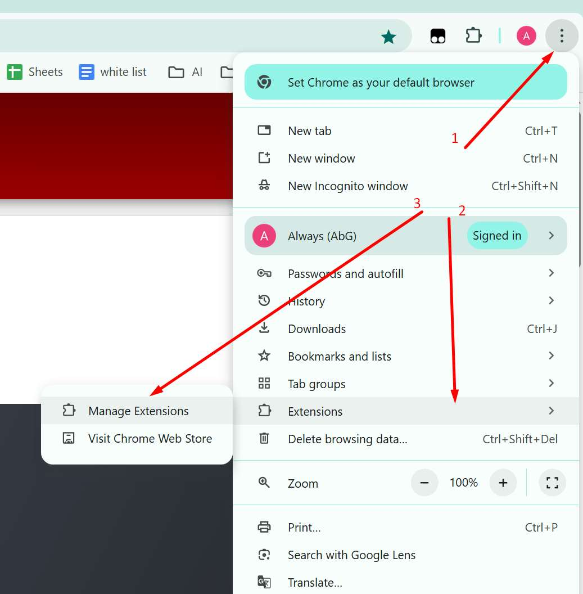
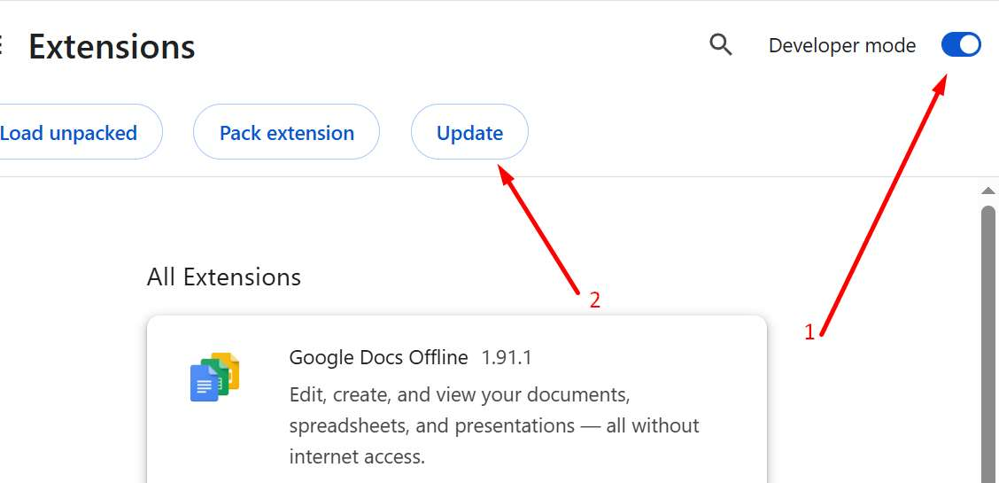
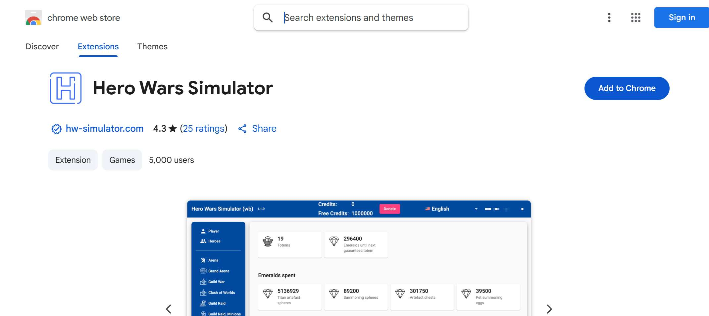
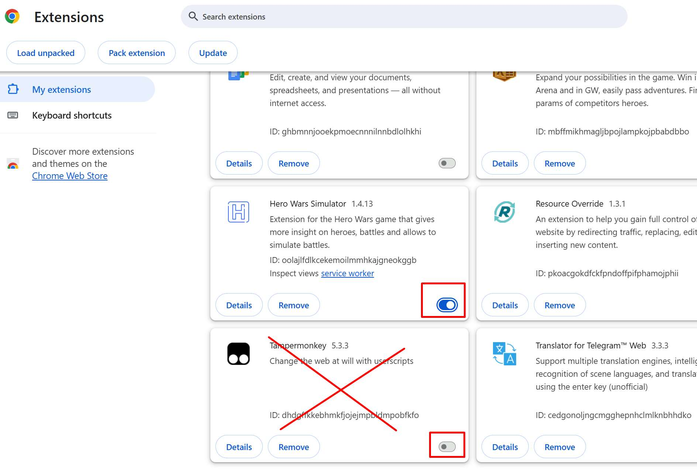
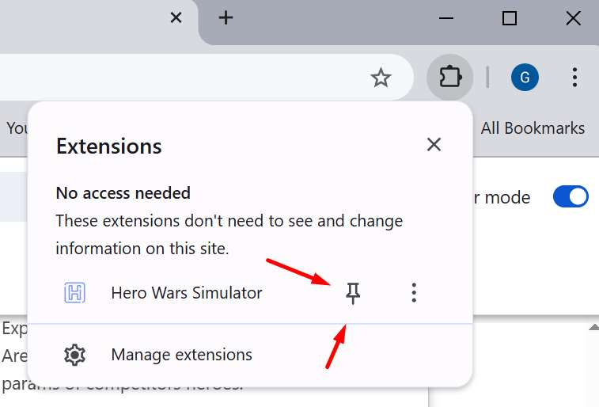
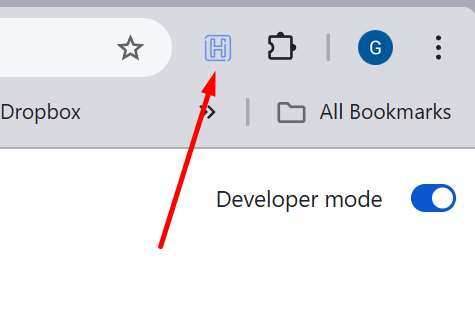

히어로즈 워 시뮬레이터 설치 방법
| 설치 단계 |
|---|
|
1단계: 확장 프로그램 열기
설정에 접근하려면 다음 단계를 따라야 합니다.

Google Chrome 권장 브라우저 Firefox는 작동하지 않습니다 |
|
2단계: 개발자 모드 활성화
설정에 접근하려면 다음 단계를 따라야 합니다.

변경 사항을 적용하려면 브라우저를 닫았다가 다시 열어야 할 수 있습니다 |
|
3단계: 히어로즈 워 시뮬레이터 설치
Chrome 스토어로 이동하여

히어로즈 워 시뮬레이터를 다운로드하세요 링크를 열려면 여기를 클릭하세요 |
|
4단계: HWS만 유지
다른 스크립트가 있는 경우

히어로즈 워 시뮬레이터를 사용할 때 일시적으로 비활성화해주세요 |
|
5단계: 히어로즈 워 시뮬레이터 설치 완료
www.hero-wars.com 게임을 열면
확인할 수 있습니다 
|
|
6단계: 히어로즈 워 시뮬레이터 고정
확장 프로그램을 추가해야 합니다

모서리에 있는 확장 프로그램 메뉴를 열어서 그런 다음
확장 프로그램 아이콘을 클릭하세요.  이 메뉴가 보일 것입니다 
파트 2로 계속... |